CODING AGENTS AS PIXEL WORLD MODELS
traex/DeepSeek-V4.1-Flash · phygen_045
点击播放 · 原生 RGB 像素
逐轮保存的候选
回放视频、检查图与代码变化。
每份候选均可单独播放。实际图片检查记录在下方工具轨迹中。
候选 01播放与检查图
点击播放 · 原生 RGB 像素

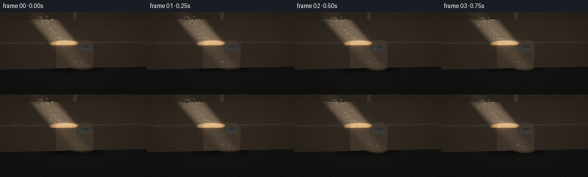
展开代码变化
--- 上一保存版本
+++ 本次保存版本
@@ -0,0 +1,487 @@
+from pathlib import Path
+
+import cv2
+import numpy as np
+from PIL import Image
+
+import artifact_io
+
+
+ROOT = Path(__file__).resolve().parent
+WIDTH, HEIGHT = 256, 144
+FRAMES, FPS = 20, 4.0
+SUPERSAMPLE = 2
+SH, SW = HEIGHT * SUPERSAMPLE, WIDTH * SUPERSAMPLE
+
+
+def normalize(v):
+ return v / np.maximum(np.linalg.norm(v, axis=-1, keepdims=True), 1e-8)
+
+
+def rotation_z(angle):
+ c, s = np.cos(angle), np.sin(angle)
+ return np.array([[c, -s, 0.0], [s, c, 0.0], [0.0, 0.0, 1.0]], np.float32)
+
+
+def smoothstep(edge0, edge1, x):
+ t = np.clip((x - edge0) / (edge1 - edge0), 0.0, 1.0)
+ return t * t * (3.0 - 2.0 * t)
+
+
+def hash21(x, y):
+ return np.modf(np.sin(x * 127.1 + y * 311.7) * 43758.5453)[0] % 1.0
+
+
+def value_noise(x, y):
+ xi, yi = np.floor(x), np.floor(y)
+ xf, yf = x - xi, y - yi
+ u = xf * xf * (3.0 - 2.0 * xf)
+ v = yf * yf * (3.0 - 2.0 * yf)
+ a = hash21(xi, yi)
+ b = hash21(xi + 1.0, yi)
+ c = hash21(xi, yi + 1.0)
+ d = hash21(xi + 1.0, yi + 1.0)
+ return (a * (1.0 - u) + b * u) * (1.0 - v) + (c * (1.0 - u) + d * u) * v
+
+
+def fbm(x, y, octaves=3):
+ total = np.zeros_like(x, dtype=np.float32)
+ amplitude = 0.55
+ for octave in range(octaves):
+ total += amplitude * value_noise(x, y)
+ x = x * 2.07 + 11.3
+ y = y * 2.03 + 7.7
+ amplitude *= 0.48
+ return total
+
+
+def ray_box(origin, directions, center, inverse_rotation, half_extents):
+ """Return nearest oriented-box hit distance, face id, and local hit position."""
+ local_origin = (origin - center) @ inverse_rotation.T
+ local_direction = directions @ inverse_rotation.T
+
+ safe_direction = np.where(
+ np.abs(local_direction) < 1e-7, 1e-7, local_direction
+ )
+ t1 = (-half_extents - local_origin) / safe_direction
+ t2 = (half_extents - local_origin) / safe_direction
+ t_near = np.minimum(t1, t2)
+ t_far = np.maximum(t1, t2)
+ t_entry = np.max(t_near, axis=-1)
+ t_exit = np.min(t_far, axis=-1)
+ hit = (t_exit >= np.maximum(t_entry, 1e-5)) & (t_entry > 1e-5)
+
+ axis = np.argmax(t_near, axis=-1)
+ local_hit = local_origin + t_entry[..., None] * local_direction
+ local_normal = np.zeros_like(local_hit)
+ rows = np.arange(axis.shape[0])
+ chosen_direction = local_direction[rows, axis]
+ for dim in range(3):
+ mask = axis == dim
+ local_normal[..., dim][mask] = -np.sign(chosen_direction[mask])
+
+ chosen_normal = np.take_along_axis(
+ local_normal, axis[..., None], axis=-1
+ )[..., 0]
+ face = axis.astype(np.int8) * 2 + (chosen_normal > 0).astype(np.int8)
+ return t_entry.astype(np.float32), face, local_hit.astype(np.float32), local_normal
+
+
+def make_camera():
+ camera = np.array([-0.68, -3.55, 1.46], np.float32)
+ target = np.array([0.01, 0.03, 0.36], np.float32)
+ forward = normalize(target - camera)
+ right = normalize(np.cross(forward, np.array([0.0, 0.0, 1.0], np.float32)))
+ up = np.cross(right, forward)
+ tan_v = np.tan(np.deg2rad(40.0) * 0.5)
+ tan_h = tan_v * WIDTH / HEIGHT
+ return camera, forward, right, up, tan_h, tan_v
+
+
+def primary_rays(camera, forward, right, up, tan_h, tan_v):
+ ys, xs = np.mgrid[0:SH, 0:SW].astype(np.float32)
+ sx = (xs + 0.5) / SW * 2.0 - 1.0
+ sy = 1.0 - (ys + 0.5) / SH * 2.0
+ directions = (
+ forward[None, None, :]
+ + sx[..., None] * tan_h * right[None, None, :]
+ + sy[..., None] * tan_v * up[None, None, :]
+ )
+ return normalize(directions)
+
+
+def box_texture(face, local_hit, half_extents):
+ hx, hy, hz = half_extents
+ lx, ly, lz = local_hit[..., 0], local_hit[..., 1], local_hit[..., 2]
+ axis = face // 2
+ positive = face % 2
+
+ u = np.where(axis == 0, ly, lx)
+ v = np.where(axis == 2, ly, lz)
+
+ grain = fbm(u * 42.0 + 5.0, v * 42.0 - 2.0, 3)
+ fine = fbm(u * 155.0, v * 155.0, 2)
+ corrugation = 0.5 + 0.5 * np.sin(v * 235.0 + 2.5 * np.sin(u * 8.0))
+ paper = 0.86 + 0.20 * grain + 0.055 * fine + 0.025 * corrugation
+
+ base = np.array([0.50, 0.285, 0.135], np.float32)
+ color = base[None, :] * paper[..., None]
+
+ edge_distance = np.minimum.reduce(
+ [
+ np.where(axis == 0, hy - np.abs(ly), hx - np.abs(lx)),
+ np.where(axis == 2, hy - np.abs(ly), hz - np.abs(lz)),
+ ]
+ )
+ edge_darken = 0.55 + 0.45 * smoothstep(0.0, 0.030, edge_distance)
+ color *= edge_darken[..., None]
+
+ # A packing tape strip runs over the top seam and down the front.
+ top_tape = (axis == 2) & (positive == 1) & (np.abs(ly) < 0.055)
+ front_tape = (
+ (axis == 1)
+ & (positive == 0)
+ & (np.abs(lx) < 0.048)
+ & (lz > hz - 0.27)
+ )
+ tape = top_tape | front_tape
+ tape_color = np.array([0.55, 0.37, 0.20], np.float32)
+ tape_variation = 0.90 + 0.10 * fbm(u * 22.0, v * 95.0, 2)
+ color = np.where(
+ tape[..., None],
+ tape_color[None, :] * tape_variation[..., None],
+ color,
+ )
+ tape_edge = tape & (np.abs(np.abs(ly) - 0.055) < 0.008)
+
+ # Subtle shipping label on the camera-facing side.
+ label = (
+ (axis == 1)
+ & (positive == 0)
+ & (lx > 0.12)
+ & (lx < 0.47)
+ & (lz > 0.18)
+ & (lz < 0.45)
+ )
+ label_color = np.array([0.47, 0.43, 0.32], np.float32)
+ label_noise = 0.92 + 0.08 * fbm(lx * 90.0, lz * 90.0, 2)
+ color = np.where(
+ label[..., None], label_color[None, :] * label_noise[..., None], color
+ )
+ barcode = (
+ label
+ & (lz > 0.27)
+ & (lz < 0.36)
+ & (lx > 0.17)
+ & (lx < 0.42)
+ & (hash21(np.floor(lx * 150.0), np.floor(lz * 40.0)) > 0.52)
+ )
+ color = np.where(barcode[..., None], np.array([0.09, 0.075, 0.055]), color)
+
+ tape_specular = tape.astype(np.float32) * 2.8
+ return np.clip(color, 0.0, 1.0), tape_specular, tape_edge
+
+
+def beam_coordinates(points, direction):
+ horizontal = np.cross(direction, np.array([0.0, 0.0, 1.0], np.float32))
+ u_axis = normalize(horizontal)
+ v_axis = np.cross(u_axis, direction)
+ rel = points - np.array([-0.12, -0.05, 0.50], np.float32)
+ return rel @ u_axis, rel @ v_axis
+
+
+def beam_mask(points, direction, half_u=0.54, half_v=0.37, softness=0.55):
+ u, v = beam_coordinates(points, direction)
+ radial = (u / half_u) ** 2 + (v / half_v) ** 2
+ return 1.0 - smoothstep(1.0 - softness, 1.0, radial)
+
+
+def shadow_visibility(points, normals, box_center, inverse_rotation, half_extents,
+ light_direction):
+ """Soft directional shadow with five taps around the light axis."""
+ horizontal = np.cross(light_direction, np.array([0.0, 0.0, 1.0], np.float32))
+ u_axis = normalize(horizontal)
+ v_axis = np.cross(u_axis, light_direction)
+ offsets = [(0.0, 0.0)]
+ radius = 0.020
+ for angle in (0.0, np.pi * 0.5, np.pi, np.pi * 1.5):
+ offsets.append((radius * np.cos(angle), radius * np.sin(angle)))
+
+ origins = points + normals * 0.004
+ visibility = np.zeros(points.shape[:-1], np.float32)
+ for u_offset, v_offset in offsets:
+ toward_light = normalize(
+ -light_direction + u_offset * u_axis + v_offset * v_axis
+ )
+ hit_t, _, _, _ = ray_box(
+ origins,
+ np.broadcast_to(toward_light, origins.shape),
+ box_center,
+ inverse_rotation,
+ half_extents,
+ )
+ visibility += (hit_t <= 0.0).astype(np.float32)
+ return visibility / len(offsets)
+
+
+def render_scene(frame_index):
+ t = frame_index / FPS
+ phase = 2.0 * np.pi * t / (FRAMES / FPS)
+
+ camera, forward, right, up, tan_h, tan_v = make_camera()
+ rays = primary_rays(camera, forward, right, up, tan_h, tan_v)
+ pixel_count = SH * SW
+ flat_rays = rays.reshape(-1, 3)
+ flat_origin = np.broadcast_to(camera, flat_rays.shape)
+
+ box_center = np.array([0.03, 0.02, 0.365], np.float32)
+ half_extents = np.array([0.58, 0.40, 0.365], np.float32)
+ box_rotation = rotation_z(np.deg2rad(-8.0))
+ inverse_rotation = box_rotation.T
+
+ box_t, box_face, box_local_hit, box_local_normal = ray_box(
+ camera, flat_rays, box_center, inverse_rotation, half_extents
+ )
+ box_hit = box_t > 0.0
+
+ with np.errstate(divide="ignore", invalid="ignore"):
+ floor_t = np.where(flat_rays[:, 2] < -1e-6, -camera[2] / flat_rays[:, 2], np.inf)
+ floor_hit = np.isfinite(floor_t) & (floor_t > 1e-5)
+
+ scene_t = np.where(box_hit & (box_t < floor_t), box_t, floor_t)
+ scene_t = np.where(floor_hit | box_hit, scene_t, 12.0).astype(np.float32)
+ is_box = box_hit & (box_t <= floor_t + 1e-5)
+ is_floor = floor_hit & ~is_box
+
+ hit_points = camera + scene_t[:, None] * flat_rays
+ normals = np.zeros_like(hit_points)
+ normals[is_floor] = np.array([0.0, 0.0, 1.0], np.float32)
+ normals[is_box] = box_local_normal[is_box] @ box_rotation.T
+
+ light_yaw = np.deg2rad(1.7 * np.sin(phase - 0.65))
+ light_direction = normalize(
+ np.array(
+ [
+ 0.620 + 0.018 * np.sin(phase - 0.4),
+ -0.115 + 0.010 * np.cos(phase - 0.4),
+ -0.776,
+ ],
+ np.float32,
+ )
+ )
+ light_direction = rotation_z(light_yaw) @ light_direction
+ light_intensity = 2.35 * (1.0 + 0.035 * np.sin(phase + 0.9))
+
+ direct_mask = beam_mask(hit_points, light_direction)
+ visibility = shadow_visibility(
+ hit_points,
+ normals,
+ box_center,
+ inverse_rotation,
+ half_extents,
+ light_direction,
+ )
+ direct = direct_mask * visibility * light_intensity
+
+ view = -flat_rays
+ half_vector = normalize((-light_direction)[None, :] + view)
+ ndotl = np.clip(normals @ (-light_direction), 0.0, 1.0)
+ ndoth = np.clip(np.sum(normals * half_vector, axis=1), 0.0, 1.0)
+
+ rgb = np.zeros((pixel_count, 3), np.float32)
+
+ # Dark, slightly cool floor with broad beam spill.
+ floor_uv = hit_points[:, :2]
+ floor_grain = fbm(floor_uv[:, 0] * 26.0 + 2.0, floor_uv[:, 1] * 26.0, 3)
+ floor_fine = fbm(floor_uv[:, 0] * 130.0, floor_uv[:, 1] * 130.0, 2)
+ floor_albedo = np.array([0.095, 0.085, 0.073], np.float32)
+ floor_color = floor_albedo[None, :] * (
+ 0.76 + 0.30 * floor_grain[:, None] + 0.08 * floor_fine[:, None]
+ )
+ floor_ao = np.ones(pixel_count, np.float32)
+ local_floor = (hit_points - box_center) @ inverse_rotation.T
+ outside_x = np.maximum(np.abs(local_floor[:, 0]) - half_extents[0], 0.0)
+ outside_y = np.maximum(np.abs(local_floor[:, 1]) - half_extents[1], 0.0)
+ footprint_distance = np.sqrt(outside_x**2 + outside_y**2)
+ floor_ao = 0.25 + 0.75 * smoothstep(0.02, 0.52, footprint_distance)
+ floor_ambient = 0.038 * (0.72 + 0.28 * np.clip(hit_points[:, 2] + 0.5, 0.0, 1.0))
+ floor_rgb = floor_color * (floor_ambient * floor_ao)[:, None]
+ floor_rgb += floor_color * (
+ direct * (0.82 + 0.18 * floor_ao) * np.clip(ndotl, 0.0, 1.0)
+ )[:, None] * np.array([1.00, 0.73, 0.47], np.float32)[None, :]
+ floor_spec = np.power(ndoth, 20.0) * direct * 0.05
+ floor_rgb += floor_spec[:, None] * np.array([1.0, 0.67, 0.40], np.float32)
+ rgb[is_floor] = floor_rgb[is_floor]
+
+ # Cardboard, tape, and shipping label.
+ box_rgb = np.zeros((pixel_count, 3), np.float32)
+ box_color, tape_specular, tape_edge = box_texture(
+ box_face, box_local_hit, half_extents
+ )
+ box_color = np.broadcast_to(box_color, (pixel_count, 3))
+ tape_specular = np.broadcast_to(tape_specular, (pixel_count,))
+ tape_edge = np.broadcast_to(tape_edge, (pixel_count,))
+ fill_from_camera = np.clip(
+ np.sum(normals * normalize(camera - hit_points), axis=1), 0.0, 1.0
+ )
+ ambient = 0.074 + 0.036 * np.clip(normals[:, 2], 0.0, 1.0)
+ ambient += 0.024 * fill_from_camera
+ box_ambient_color = np.array([0.55, 0.67, 0.90], np.float32)
+ box_rgb = box_color * (ambient[:, None] * box_ambient_color[None, :] + 0.022)
+ box_rgb += box_color * (direct * np.clip(ndotl, 0.0, 1.0))[:, None] * np.array(
+ [1.00, 0.76, 0.51], np.float32
+ )[None, :]
+ box_spec = np.power(ndoth, 34.0) * direct * (0.12 + tape_specular)
+ box_rgb += box_spec[:, None] * np.array([1.0, 0.73, 0.47], np.float32)
+ box_rgb += (tape_edge * direct * 0.12)[:, None] * np.array(
+ [1.0, 0.78, 0.52], np.float32
+ )
+ rgb[is_box] = box_rgb[is_box]
+
+ # Dark background with just enough tonal variation to keep the silhouette clean.
+ bg = np.zeros((pixel_count, 3), np.float32)
+ background_y = np.linspace(0.0, 1.0, SH, dtype=np.float32)[:, None]
+ background_y = np.broadcast_to(background_y, (SH, SW)).reshape(-1)
+ bg[:] = np.array([0.005, 0.007, 0.011], np.float32)
+ bg += (0.006 * (1.0 - background_y))[:, None] * np.array(
+ [0.48, 0.58, 0.80], np.float32
+ )
+ rgb[~(is_box | is_floor)] = bg[~(is_box | is_floor)]
+
+ # Volumetric scattering in the beam. March only to the first opaque surface.
+ jitter = hash21(
+ np.arange(pixel_count, dtype=np.float32),
+ np.full(pixel_count, frame_index * 19.0 + 4.0, np.float32),
+ )
+ steps = 44
+ step_length = scene_t / steps
+ scatter = np.zeros(pixel_count, np.float32)
+ scatter_color = np.array([1.00, 0.69, 0.41], np.float32)
+ for step in range(steps):
+ distance = (step + jitter) * step_length
+ points = camera + distance[:, None] * flat_rays
+ mask = beam_mask(points, light_direction, 0.55, 0.38, 0.72)
+ s, u, v = (
+ np.sum((points - np.array([-0.12, -0.05, 0.50], np.float32)) * light_direction, axis=1),
+ *beam_coordinates(points, light_direction),
+ )
+ axial_fade = smoothstep(-1.8, -1.15, s) * (1.0 - 0.28 * smoothstep(0.20, 1.25, s))
+ wisps = 0.68 + 0.32 * fbm(
+ u * 13.0 + 3.2 * np.sin(t * 0.8),
+ v * 18.0 - s * 4.0 + t * 0.35,
+ 2,
+ )
+ near_boost = 0.72 + 0.28 * smoothstep(0.0, 0.8, distance)
+ scatter += (
+ mask
+ * axial_fade
+ * wisps
+ * near_boost
+ * step_length
+ * 0.105
+ * light_intensity
+ )
+ volume = np.clip(scatter, 0.0, 0.75)
+ rgb += volume[:, None] * scatter_color[None, :]
+
+ # A small number of illuminated dust motes make the light shaft read in motion.
+ dust_layer = np.zeros((SH, SW), np.float32)
+ rng = np.random.default_rng(1847)
+ count = 64
+ dust_s = rng.uniform(-1.35, 0.95, count).astype(np.float32)
+ dust_u = rng.normal(0.0, 0.21, count).astype(np.float32)
+ dust_v = rng.normal(0.0, 0.14, count).astype(np.float32)
+ dust_brightness = rng.uniform(0.18, 0.95, count).astype(np.float32)
+ dust_phase = rng.uniform(0.0, 2.0 * np.pi, count).astype(np.float32)
+ horizontal = normalize(np.cross(light_direction, np.array([0.0, 0.0, 1.0], np.float32)))
+ vertical = np.cross(horizontal, light_direction)
+ for index in range(count):
+ s = dust_s[index] + 0.055 * t + 0.018 * np.sin(phase + dust_phase[index])
+ u = dust_u[index] + 0.012 * np.sin(0.7 * phase + dust_phase[index])
+ v = dust_v[index] + 0.010 * np.cos(0.9 * phase + dust_phase[index])
+ point = (
+ np.array([-0.12, -0.05, 0.50], np.float32)
+ + s * light_direction
+ + u * horizontal
+ + v * vertical
+ )
+ if point[2] < 0.03:
+ continue
+ relative = point - camera
+ depth = float(relative @ forward)
+ if depth <= 0.15:
+ continue
+ px = int(round((0.5 + 0.5 * float(relative @ right) / (depth * tan_h)) * SW))
+ py = int(round((0.5 - 0.5 * float(relative @ up) / (depth * tan_v)) * SH))
+ if px < 2 or px >= SW - 2 or py < 2 or py >= SH - 2:
+ continue
+ hit_depth = scene_t[py * SW + px]
+ if depth > hit_depth + 0.04:
+ continue
+ beam = float(beam_mask(point[None, :], light_direction)[0])
+ if beam < 0.10:
+ continue
+ radius = 0.75 + 0.55 * (1.0 - dust_brightness[index])
+ strength = beam * dust_brightness[index] * (0.30 + 0.70 / (1.0 + depth * 0.15))
+ y0, y1 = max(0, py - 2), min(SH, py + 3)
+ x0, x1 = max(0, px - 2), min(SW, px + 3)
+ yy, xx = np.mgrid[y0:y1, x0:x1]
+ splat = np.exp(-((xx - px) ** 2 + (yy - py) ** 2) / (2.0 * radius**2))
+ dust_layer[y0:y1, x0:x1] += (strength * splat).astype(np.float32)
+ rgb += dust_layer.reshape(-1, 1) * np.array([1.0, 0.72, 0.45], np.float32)
+
+ hdr = rgb.reshape(SH, SW, 3)
+ hdr = downsample_hdr(hdr)
+ hdr = apply_bloom(hdr)
+ image = tonemap(hdr, frame_index)
+ return image
+
+
+def downsample_hdr(image):
+ return cv2.resize(image, (WIDTH, HEIGHT), interpolation=cv2.INTER_AREA)
+
+
+def apply_bloom(image):
+ luminance = np.maximum.reduce(
+ [image[..., 0], image[..., 1], image[..., 2]]
+ )
+ highlight = np.clip(luminance - 0.58, 0.0, None)
+ bright = image * (highlight / np.maximum(luminance, 1e-5))[..., None]
+ small = cv2.GaussianBlur(bright, (0, 0), sigmaX=2.4, sigmaY=2.4)
+ wide = cv2.GaussianBlur(bright, (0, 0), sigmaX=8.0, sigmaY=8.0)
+ return image + 0.45 * small + 0.18 * wide
+
+
+def tonemap(hdr, frame_index):
+ exposed = np.clip(hdr * 1.18, 0.0, None)
+ mapped = exposed / (1.0 + exposed * 0.72)
+ mapped = np.power(np.clip(mapped, 0.0, 1.0), 1.0 / 2.2)
+
+ yy, xx = np.mgrid[0:HEIGHT, 0:WIDTH].astype(np.float32)
+ nx = (xx / (WIDTH - 1.0)) * 2.0 - 1.0
+ ny = (yy / (HEIGHT - 1.0)) * 2.0 - 1.0
+ vignette = 1.0 - 0.20 * smoothstep(0.35, 1.45, np.sqrt(nx**2 + ny**2))
+ mapped *= vignette[..., None]
+
+ # Cool the deepest values while keeping the beam and cardboard warm.
+ luminance = mapped @ np.array([0.2126, 0.7152, 0.0722], np.float32)
+ shadow_tint = np.array([0.92, 0.98, 1.07], np.float32)
+ tint_amount = (1.0 - smoothstep(0.0, 0.22, luminance))[..., None] * 0.22
+ mapped = mapped * (1.0 - tint_amount) + mapped * shadow_tint * tint_amount
+
+ rng = np.random.default_rng(9000 + frame_index)
+ grain = rng.normal(0.0, 0.009, (HEIGHT, WIDTH, 1)).astype(np.float32)
+ mapped = np.clip(mapped + grain, 0.0, 1.0)
+ return (mapped * 255.0 + 0.5).astype(np.uint8)
+
+
+def main():
+ frames = np.stack([render_scene(index) for index in range(FRAMES)])
+ assert frames.shape == (FRAMES, HEIGHT, WIDTH, 3), frames.shape
+ assert frames.dtype == np.uint8
+ artifact_io.save(frames, ROOT)
+ print(f"saved {FRAMES} frames to {ROOT}")
+
+
+if __name__ == "__main__":
+ main()
候选 02播放与检查图
点击播放 · 原生 RGB 像素

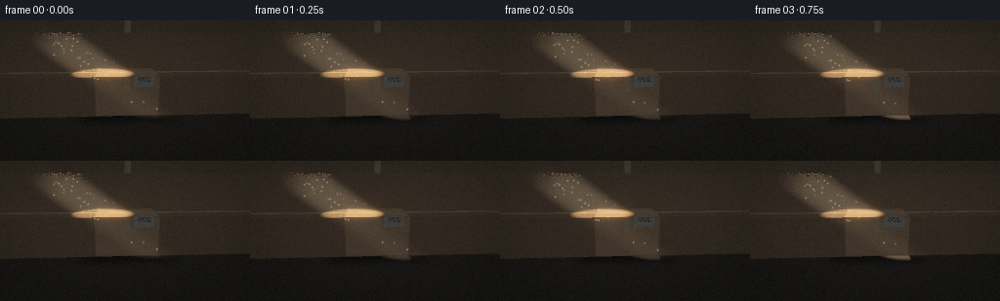
展开代码变化
--- 上一保存版本
+++ 本次保存版本
@@ -262,9 +262,9 @@
light_direction = normalize(
np.array(
[
- 0.620 + 0.018 * np.sin(phase - 0.4),
- -0.115 + 0.010 * np.cos(phase - 0.4),
- -0.776,
+ 0.74 + 0.018 * np.sin(phase - 0.4),
+ -0.12 + 0.010 * np.cos(phase - 0.4),
+ -0.57,
],
np.float32,
)
@@ -290,7 +290,7 @@
rgb = np.zeros((pixel_count, 3), np.float32)
- # Dark, slightly cool floor with broad beam spill.
+ # Dark, slightly cool floor with a visible illuminated pool around the box.
floor_uv = hit_points[:, :2]
floor_grain = fbm(floor_uv[:, 0] * 26.0 + 2.0, floor_uv[:, 1] * 26.0, 3)
floor_fine = fbm(floor_uv[:, 0] * 130.0, floor_uv[:, 1] * 130.0, 2)
@@ -304,10 +304,10 @@
outside_y = np.maximum(np.abs(local_floor[:, 1]) - half_extents[1], 0.0)
footprint_distance = np.sqrt(outside_x**2 + outside_y**2)
floor_ao = 0.25 + 0.75 * smoothstep(0.02, 0.52, footprint_distance)
- floor_ambient = 0.038 * (0.72 + 0.28 * np.clip(hit_points[:, 2] + 0.5, 0.0, 1.0))
+ floor_ambient = 0.060 * (0.72 + 0.28 * np.clip(hit_points[:, 2] + 0.5, 0.0, 1.0))
floor_rgb = floor_color * (floor_ambient * floor_ao)[:, None]
floor_rgb += floor_color * (
- direct * (0.82 + 0.18 * floor_ao) * np.clip(ndotl, 0.0, 1.0)
+ direct * (1.22 + 0.24 * floor_ao) * np.clip(ndotl, 0.0, 1.0)
)[:, None] * np.array([1.00, 0.73, 0.47], np.float32)[None, :]
floor_spec = np.power(ndoth, 20.0) * direct * 0.05
floor_rgb += floor_spec[:, None] * np.array([1.0, 0.67, 0.40], np.float32)
@@ -324,11 +324,14 @@
fill_from_camera = np.clip(
np.sum(normals * normalize(camera - hit_points), axis=1), 0.0, 1.0
)
- ambient = 0.074 + 0.036 * np.clip(normals[:, 2], 0.0, 1.0)
+ ambient = 0.088 + 0.042 * np.clip(normals[:, 2], 0.0, 1.0)
ambient += 0.024 * fill_from_camera
box_ambient_color = np.array([0.55, 0.67, 0.90], np.float32)
box_rgb = box_color * (ambient[:, None] * box_ambient_color[None, :] + 0.022)
- box_rgb += box_color * (direct * np.clip(ndotl, 0.0, 1.0))[:, None] * np.array(
+ box_rgb += box_color * (
+ direct * (1.16 + 0.25 * np.clip(normals[:, 2], 0.0, 1.0))
+ * np.clip(ndotl, 0.0, 1.0)
+ )[:, None] * np.array(
[1.00, 0.76, 0.51], np.float32
)[None, :]
box_spec = np.power(ndoth, 34.0) * direct * (0.12 + tape_specular)
@@ -338,14 +341,12 @@
)
rgb[is_box] = box_rgb[is_box]
- # Dark background with just enough tonal variation to keep the silhouette clean.
+ # The beam terminates on the backdrop, making its diagonal path unmistakable.
bg = np.zeros((pixel_count, 3), np.float32)
- background_y = np.linspace(0.0, 1.0, SH, dtype=np.float32)[:, None]
- background_y = np.broadcast_to(background_y, (SH, SW)).reshape(-1)
- bg[:] = np.array([0.005, 0.007, 0.011], np.float32)
- bg += (0.006 * (1.0 - background_y))[:, None] * np.array(
- [0.48, 0.58, 0.80], np.float32
- )
+ backdrop_points = camera + 8.0 * flat_rays
+ backdrop_beam = beam_mask(backdrop_points, light_direction, 0.72, 0.54, 0.66)
+ bg[:] = np.array([0.011, 0.014, 0.022], np.float32)
+ bg += backdrop_beam[:, None] * np.array([0.19, 0.13, 0.085], np.float32)
rgb[~(is_box | is_floor)] = bg[~(is_box | is_floor)]
# Volumetric scattering in the beam. March only to the first opaque surface.
@@ -353,7 +354,7 @@
np.arange(pixel_count, dtype=np.float32),
np.full(pixel_count, frame_index * 19.0 + 4.0, np.float32),
)
- steps = 44
+ steps = 30
step_length = scene_t / steps
scatter = np.zeros(pixel_count, np.float32)
scatter_color = np.array([1.00, 0.69, 0.41], np.float32)
@@ -378,7 +379,7 @@
* wisps
* near_boost
* step_length
- * 0.105
+ * 0.058
* light_intensity
)
volume = np.clip(scatter, 0.0, 0.75)
候选 03播放与检查图
点击播放 · 原生 RGB 像素
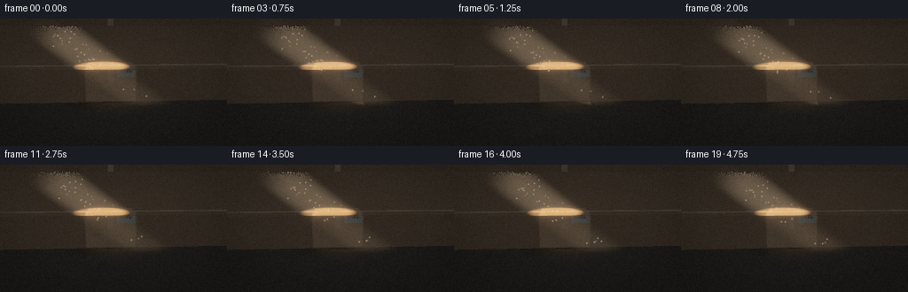
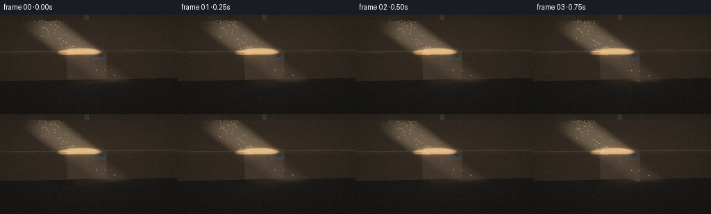
展开代码变化
--- 上一保存版本
+++ 本次保存版本
@@ -89,7 +89,7 @@
def make_camera():
camera = np.array([-0.68, -3.55, 1.46], np.float32)
- target = np.array([0.01, 0.03, 0.36], np.float32)
+ target = np.array([-0.08, 0.03, 0.29], np.float32)
forward = normalize(target - camera)
right = normalize(np.cross(forward, np.array([0.0, 0.0, 1.0], np.float32)))
up = np.cross(right, forward)
@@ -224,6 +224,47 @@
return visibility / len(offsets)
+def projected_shadow(points, box_center, rotation, half_extents, light_direction):
+ """Analytic penumbra for the box silhouette projected onto the floor."""
+ signs = np.array(
+ [
+ [sx, sy, sz]
+ for sx in (-1.0, 1.0)
+ for sy in (-1.0, 1.0)
+ for sz in (-1.0, 1.0)
+ ],
+ np.float32,
+ )
+ vertices = (signs * half_extents) @ rotation.T + box_center
+ travel = -vertices[:, 2] / light_direction[2]
+ projected = vertices[:, :2] + travel[:, None] * light_direction[:2]
+ polygon = cv2.convexHull(projected.astype(np.float32)).reshape(-1, 2)
+ if np.cross(polygon[1] - polygon[0], polygon[2] - polygon[0]) < 0.0:
+ polygon = polygon[::-1]
+
+ relative = points[:, :2]
+ inside = np.ones(len(points), bool)
+ edge_distance = np.full(len(points), np.inf, np.float32)
+ for index in range(len(polygon)):
+ a = polygon[index]
+ b = polygon[(index + 1) % len(polygon)]
+ edge = b - a
+ cross = edge[0] * (relative[:, 1] - a[1]) - edge[1] * (
+ relative[:, 0] - a[0]
+ )
+ inside &= cross >= 0.0
+ denom = float(edge @ edge)
+ along = np.clip(
+ ((relative - a[None, :]) @ edge) / max(denom, 1e-8), 0.0, 1.0
+ )
+ closest = a[None, :] + along[:, None] * edge[None, :]
+ edge_distance = np.minimum(
+ edge_distance, np.linalg.norm(relative - closest, axis=1)
+ )
+ signed_distance = np.where(inside, -edge_distance, edge_distance)
+ return 1.0 - smoothstep(-0.055, 0.070, signed_distance)
+
+
def render_scene(frame_index):
t = frame_index / FPS
phase = 2.0 * np.pi * t / (FRAMES / FPS)
@@ -234,9 +275,9 @@
flat_rays = rays.reshape(-1, 3)
flat_origin = np.broadcast_to(camera, flat_rays.shape)
- box_center = np.array([0.03, 0.02, 0.365], np.float32)
- half_extents = np.array([0.58, 0.40, 0.365], np.float32)
- box_rotation = rotation_z(np.deg2rad(-8.0))
+ box_center = np.array([-0.15, 0.02, 0.335], np.float32)
+ half_extents = np.array([0.51, 0.365, 0.335], np.float32)
+ box_rotation = rotation_z(np.deg2rad(-7.0))
inverse_rotation = box_rotation.T
box_t, box_face, box_local_hit, box_local_normal = ray_box(
@@ -282,6 +323,13 @@
light_direction,
)
direct = direct_mask * visibility * light_intensity
+ floor_shadow = projected_shadow(
+ hit_points,
+ box_center,
+ box_rotation,
+ half_extents,
+ light_direction,
+ )
view = -flat_rays
half_vector = normalize((-light_direction)[None, :] + view)
@@ -294,7 +342,7 @@
floor_uv = hit_points[:, :2]
floor_grain = fbm(floor_uv[:, 0] * 26.0 + 2.0, floor_uv[:, 1] * 26.0, 3)
floor_fine = fbm(floor_uv[:, 0] * 130.0, floor_uv[:, 1] * 130.0, 2)
- floor_albedo = np.array([0.095, 0.085, 0.073], np.float32)
+ floor_albedo = np.array([0.125, 0.111, 0.092], np.float32)
floor_color = floor_albedo[None, :] * (
0.76 + 0.30 * floor_grain[:, None] + 0.08 * floor_fine[:, None]
)
@@ -307,8 +355,19 @@
floor_ambient = 0.060 * (0.72 + 0.28 * np.clip(hit_points[:, 2] + 0.5, 0.0, 1.0))
floor_rgb = floor_color * (floor_ambient * floor_ao)[:, None]
floor_rgb += floor_color * (
- direct * (1.22 + 0.24 * floor_ao) * np.clip(ndotl, 0.0, 1.0)
+ direct
+ * (1.55 + 0.30 * floor_ao)
+ * np.clip(ndotl, 0.0, 1.0)
+ * (1.0 - 0.86 * floor_shadow)
)[:, None] * np.array([1.00, 0.73, 0.47], np.float32)[None, :]
+ pool_center = np.array([0.05, -0.15], np.float32)
+ pool_delta = (hit_points[:, :2] - pool_center) / np.array([0.92, 0.60])
+ pool = np.exp(-2.1 * np.sum(pool_delta**2, axis=1)) * (1.0 - 0.82 * floor_shadow)
+ floor_rgb += (
+ floor_color
+ * (pool * 0.27)[:, None]
+ * np.array([1.00, 0.70, 0.43], np.float32)[None, :]
+ )
floor_spec = np.power(ndoth, 20.0) * direct * 0.05
floor_rgb += floor_spec[:, None] * np.array([1.0, 0.67, 0.40], np.float32)
rgb[is_floor] = floor_rgb[is_floor]
@@ -346,7 +405,7 @@
backdrop_points = camera + 8.0 * flat_rays
backdrop_beam = beam_mask(backdrop_points, light_direction, 0.72, 0.54, 0.66)
bg[:] = np.array([0.011, 0.014, 0.022], np.float32)
- bg += backdrop_beam[:, None] * np.array([0.19, 0.13, 0.085], np.float32)
+ bg += backdrop_beam[:, None] * np.array([0.30, 0.20, 0.125], np.float32)
rgb[~(is_box | is_floor)] = bg[~(is_box | is_floor)]
# Volumetric scattering in the beam. March only to the first opaque surface.
@@ -361,7 +420,7 @@
for step in range(steps):
distance = (step + jitter) * step_length
points = camera + distance[:, None] * flat_rays
- mask = beam_mask(points, light_direction, 0.55, 0.38, 0.72)
+ mask = beam_mask(points, light_direction, 0.62, 0.42, 0.78)
s, u, v = (
np.sum((points - np.array([-0.12, -0.05, 0.50], np.float32)) * light_direction, axis=1),
*beam_coordinates(points, light_direction),
@@ -379,7 +438,7 @@
* wisps
* near_boost
* step_length
- * 0.058
+ * 0.072
* light_intensity
)
volume = np.clip(scatter, 0.0, 0.75)
候选 04播放与检查图
点击播放 · 原生 RGB 像素

展开代码变化
--- 上一保存版本
+++ 本次保存版本
@@ -303,9 +303,9 @@
light_direction = normalize(
np.array(
[
- 0.74 + 0.018 * np.sin(phase - 0.4),
- -0.12 + 0.010 * np.cos(phase - 0.4),
- -0.57,
+ 0.79 + 0.018 * np.sin(phase - 0.4),
+ -0.09 + 0.010 * np.cos(phase - 0.4),
+ -0.53,
],
np.float32,
)
@@ -355,7 +355,9 @@
floor_ambient = 0.060 * (0.72 + 0.28 * np.clip(hit_points[:, 2] + 0.5, 0.0, 1.0))
floor_rgb = floor_color * (floor_ambient * floor_ao)[:, None]
floor_rgb += floor_color * (
- direct
+ direct_mask
+ * visibility
+ * light_intensity
* (1.55 + 0.30 * floor_ao)
* np.clip(ndotl, 0.0, 1.0)
* (1.0 - 0.86 * floor_shadow)
@@ -420,7 +422,7 @@
for step in range(steps):
distance = (step + jitter) * step_length
points = camera + distance[:, None] * flat_rays
- mask = beam_mask(points, light_direction, 0.62, 0.42, 0.78)
+ mask = beam_mask(points, light_direction, 0.55, 0.38, 0.88)
s, u, v = (
np.sum((points - np.array([-0.12, -0.05, 0.50], np.float32)) * light_direction, axis=1),
*beam_coordinates(points, light_direction),
@@ -438,10 +440,10 @@
* wisps
* near_boost
* step_length
- * 0.072
+ * 0.030
* light_intensity
)
- volume = np.clip(scatter, 0.0, 0.75)
+ volume = np.clip(scatter, 0.0, 0.30)
rgb += volume[:, None] * scatter_color[None, :]
# A small number of illuminated dust motes make the light shaft read in motion.
候选 05播放与检查图
点击播放 · 原生 RGB 像素
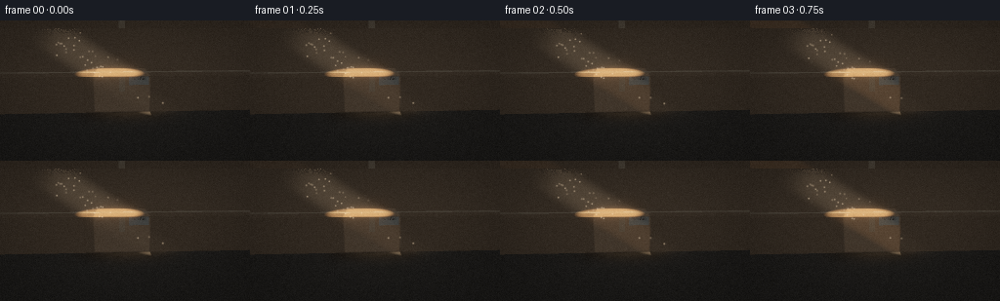
展开代码变化
--- 上一保存版本
+++ 本次保存版本
@@ -239,7 +239,9 @@
travel = -vertices[:, 2] / light_direction[2]
projected = vertices[:, :2] + travel[:, None] * light_direction[:2]
polygon = cv2.convexHull(projected.astype(np.float32)).reshape(-1, 2)
- if np.cross(polygon[1] - polygon[0], polygon[2] - polygon[0]) < 0.0:
+ edge_a = polygon[1] - polygon[0]
+ edge_b = polygon[2] - polygon[0]
+ if edge_a[0] * edge_b[1] - edge_a[1] * edge_b[0] < 0.0:
polygon = polygon[::-1]
relative = points[:, :2]
@@ -285,8 +287,13 @@
)
box_hit = box_t > 0.0
+ floor_height = -0.14
with np.errstate(divide="ignore", invalid="ignore"):
- floor_t = np.where(flat_rays[:, 2] < -1e-6, -camera[2] / flat_rays[:, 2], np.inf)
+ floor_t = np.where(
+ flat_rays[:, 2] < -1e-6,
+ (floor_height - camera[2]) / flat_rays[:, 2],
+ np.inf,
+ )
floor_hit = np.isfinite(floor_t) & (floor_t > 1e-5)
scene_t = np.where(box_hit & (box_t < floor_t), box_t, floor_t)
@@ -295,6 +302,8 @@
is_floor = floor_hit & ~is_box
hit_points = camera + scene_t[:, None] * flat_rays
+ safe_floor_t = np.where(floor_hit, floor_t, 0.0)
+ floor_points = camera + safe_floor_t[:, None] * flat_rays
normals = np.zeros_like(hit_points)
normals[is_floor] = np.array([0.0, 0.0, 1.0], np.float32)
normals[is_box] = box_local_normal[is_box] @ box_rotation.T
@@ -303,9 +312,9 @@
light_direction = normalize(
np.array(
[
- 0.79 + 0.018 * np.sin(phase - 0.4),
- -0.09 + 0.010 * np.cos(phase - 0.4),
- -0.53,
+ 0.60 + 0.018 * np.sin(phase - 0.4),
+ -0.70 + 0.010 * np.cos(phase - 0.4),
+ -0.30,
],
np.float32,
)
@@ -324,7 +333,7 @@
)
direct = direct_mask * visibility * light_intensity
floor_shadow = projected_shadow(
- hit_points,
+ floor_points,
box_center,
box_rotation,
half_extents,
@@ -339,7 +348,7 @@
rgb = np.zeros((pixel_count, 3), np.float32)
# Dark, slightly cool floor with a visible illuminated pool around the box.
- floor_uv = hit_points[:, :2]
+ floor_uv = floor_points[:, :2]
floor_grain = fbm(floor_uv[:, 0] * 26.0 + 2.0, floor_uv[:, 1] * 26.0, 3)
floor_fine = fbm(floor_uv[:, 0] * 130.0, floor_uv[:, 1] * 130.0, 2)
floor_albedo = np.array([0.125, 0.111, 0.092], np.float32)
@@ -352,22 +361,22 @@
outside_y = np.maximum(np.abs(local_floor[:, 1]) - half_extents[1], 0.0)
footprint_distance = np.sqrt(outside_x**2 + outside_y**2)
floor_ao = 0.25 + 0.75 * smoothstep(0.02, 0.52, footprint_distance)
- floor_ambient = 0.060 * (0.72 + 0.28 * np.clip(hit_points[:, 2] + 0.5, 0.0, 1.0))
+ floor_ambient = 0.060 * (0.72 + 0.28 * np.clip(floor_points[:, 2] + 0.5, 0.0, 1.0))
floor_rgb = floor_color * (floor_ambient * floor_ao)[:, None]
floor_rgb += floor_color * (
direct_mask
* visibility
* light_intensity
- * (1.55 + 0.30 * floor_ao)
+ * (1.35 + 0.25 * floor_ao)
* np.clip(ndotl, 0.0, 1.0)
- * (1.0 - 0.86 * floor_shadow)
+ * (1.0 - 0.92 * floor_shadow)
)[:, None] * np.array([1.00, 0.73, 0.47], np.float32)[None, :]
pool_center = np.array([0.05, -0.15], np.float32)
- pool_delta = (hit_points[:, :2] - pool_center) / np.array([0.92, 0.60])
- pool = np.exp(-2.1 * np.sum(pool_delta**2, axis=1)) * (1.0 - 0.82 * floor_shadow)
+ pool_delta = (floor_points[:, :2] - pool_center) / np.array([1.20, 1.00])
+ pool = np.exp(-2.1 * np.sum(pool_delta**2, axis=1)) * (1.0 - 0.92 * floor_shadow)
floor_rgb += (
floor_color
- * (pool * 0.27)[:, None]
+ * (pool * 0.19)[:, None]
* np.array([1.00, 0.70, 0.43], np.float32)[None, :]
)
floor_spec = np.power(ndoth, 20.0) * direct * 0.05
候选 06播放与检查图

候选 07播放与检查图
点击播放 · 原生 RGB 像素
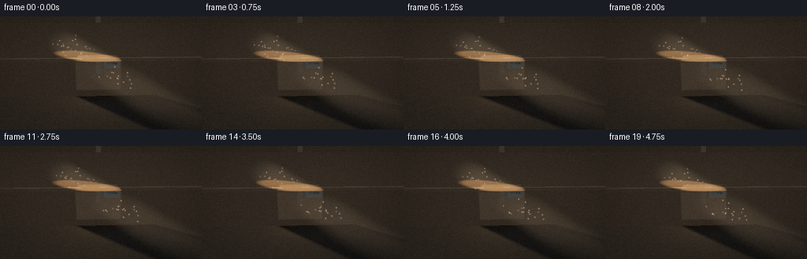
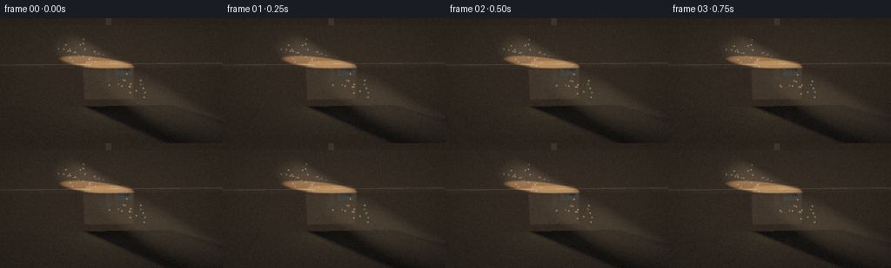
展开代码变化
--- 上一保存版本
+++ 本次保存版本
@@ -339,6 +339,7 @@
half_extents,
light_direction,
)
+ floor_shadow *= is_floor
view = -flat_rays
half_vector = normalize((-light_direction)[None, :] + view)
@@ -361,22 +362,27 @@
outside_y = np.maximum(np.abs(local_floor[:, 1]) - half_extents[1], 0.0)
footprint_distance = np.sqrt(outside_x**2 + outside_y**2)
floor_ao = 0.25 + 0.75 * smoothstep(0.02, 0.52, footprint_distance)
- floor_ambient = 0.060 * (0.72 + 0.28 * np.clip(floor_points[:, 2] + 0.5, 0.0, 1.0))
+ floor_ambient = 0.036 * (0.72 + 0.28 * np.clip(floor_points[:, 2] + 0.5, 0.0, 1.0))
floor_rgb = floor_color * (floor_ambient * floor_ao)[:, None]
+ floor_rgb += (
+ floor_color
+ * (1.0 - floor_shadow)[:, None]
+ * np.array([0.14, 0.105, 0.070], np.float32)[None, :]
+ )
floor_rgb += floor_color * (
direct_mask
* visibility
* light_intensity
- * (1.35 + 0.25 * floor_ao)
+ * (2.15 + 0.35 * floor_ao)
* np.clip(ndotl, 0.0, 1.0)
- * (1.0 - 0.92 * floor_shadow)
+ * (1.0 - 0.97 * floor_shadow)
)[:, None] * np.array([1.00, 0.73, 0.47], np.float32)[None, :]
pool_center = np.array([0.05, -0.15], np.float32)
pool_delta = (floor_points[:, :2] - pool_center) / np.array([1.20, 1.00])
pool = np.exp(-2.1 * np.sum(pool_delta**2, axis=1)) * (1.0 - 0.92 * floor_shadow)
floor_rgb += (
floor_color
- * (pool * 0.19)[:, None]
+ * (pool * 0.28)[:, None]
* np.array([1.00, 0.70, 0.43], np.float32)[None, :]
)
floor_spec = np.power(ndoth, 20.0) * direct * 0.05
可观测工具轨迹
实际执行的命令与返回图片。
命令 1exit 0
/bin/bash -c "pwd && rg --files -g '"'!*'"\\.git/*' | sed -n '1,200p'"
命令 2exit 0
/bin/bash -c 'cat prompt.txt'
命令 3exit 0
/bin/bash -c 'cat GENERATION_RULES.md'
命令 4exit 0
/bin/bash -c 'cat task_spec.json'
命令 5exit 0
/bin/bash -c "find . -maxdepth 2 -type f -not -path './.git/*' -printf '%p %s bytes\\n' | sort"
命令 6exit 0
/bin/bash -c "sed -n '1,260p' artifact_io.py"
命令 7exit 0
/bin/bash -c "sed -n '1,240p' player_template.html"
命令 8exit 0
/bin/bash -c 'git status --short --branch'
命令 9exit 0
/bin/bash -c "python - <<'PY' import sys print(sys.version) for m in ['numpy','PIL','imageio','cv2','matplotlib']: try: mod=__import__(m) print(m, getattr(mod,'__version__','ok')) except Exception as e: print(m,'missing',e) PY"
命令 10exit 1
/bin/bash -c 'python generate.py'
命令 11exit 1
/bin/bash -c 'python generate.py'
命令 12exit 1
/bin/bash -c 'python generate.py'
命令 13exit 1
/bin/bash -c 'python generate.py'
命令 14exit 1
/bin/bash -c 'python generate.py'
命令 15exit 1
/bin/bash -c 'python generate.py'
命令 16exit 0
/bin/bash -c 'python generate.py'
命令 17exit 0
/bin/bash -c "python - <<'PY' from PIL import Image import numpy as np for p in ['frames/00.png','frames/10.png','frames/19.png']: a=np.asarray(Image.open(p)); print(p,a.mean((0,1)),a.min(),a.max(),np.percentile(a,[50,90,99,99.9])) PY"
命令 18exit 0
/bin/bash -c 'python generate.py'
命令 19exit 0
/bin/bash -c 'python generate.py'
命令 20exit 0
/bin/bash -c "python - <<'PY'
import numpy as np
import generate as g
c=np.array([-0.15,0.02,0.335],np.float32); h=np.array([.51,.365,.335],np.float32); r=g.rotation_z(np.deg2rad(-7)); d=g.normalize(np.array([.79,-.09,-.53],np.float32))
s=np.array([[x,y,z] for x in (-1,1) for y in (-1,1) for z in (-1,1)],np.float32)
v=(s*h)@r.T+c
p=v[:,:2]+(-v[:,2]/d[2])[:,None]*d[:2]
import cv2
hull=cv2.convexHull(p.astype(np.float32)).reshape(-1,2)
print('light',d,'vertices floor',p,'hull',hull)
cam,f,right,up,th,tv=g.make_camera()
for x,y in hull:
z=0; q=np.array([x,y,z]); rel=q-cam; depth=rel@f; sx=.5+.5*(rel@right)/(depth*th); sy=.5-.5*(rel@up)/(depth*tv)
print(q, 'screen',sx*256,sy*144)
PY"命令 21exit 0
/bin/bash -c 'python generate.py'
命令 22exit 0
/bin/bash -c "python - <<'PY'
import numpy as np
from PIL import Image
im=np.asarray(Image.open('frames/00.png')).astype(float)
# report mean RGB and luminance on 8x6 coarse tiles
for y in range(0,144,24):
print(' '.join(f'{im[y:y+24,x:x+32].mean():5.1f}' for x in range(0,256,32)))
PY"命令 23exit 0
/bin/bash -c 'command -v magick || command -v convert || true'
命令 24exit 127
/bin/bash -c 'ffmpeg -version | head -1 && ffmpeg -y -loglevel error -i frames/00.png -vf "crop=180:70:55:70,scale=720:280:flags=neighbor" .tmp/shadow_crop.png'
命令 25exit 0
/bin/bash -c "python - <<'PY'
from PIL import Image
im=Image.open('frames/00.png').crop((55,70,235,140)).resize((720,280),Image.Resampling.NEAREST)
im.save('.tmp/shadow_crop.png')
PY"命令 26exit 0
/bin/bash -c "python - <<'PY'
import numpy as np, cv2, generate as g
c=np.array([-0.15,.02,.335]); h=np.array([.51,.365,.335]); r=g.rotation_z(np.deg2rad(-7))
cam,f,right,up,th,tv=g.make_camera()
for d in [[.85,-.42,-.27],[.8,-.5,-.3],[.9,-.3,-.15],[.8,-.35,-.18]]:
d=g.normalize(np.array(d,np.float32)); s=np.array([[x,y,z] for x in(-1,1) for y in(-1,1) for z in(-1,1)],np.float32); v=(s*h)@r.T+c; p=v[:,:2]+(-v[:,2]/d[2])[:,None]*d[:2]
pts=[]
for q in p:
q=np.r_[q,0.]; rel=q-cam; dep=rel@f; pts.append([(.5+.5*(rel@right)/(dep*th))*256,(.5-.5*(rel@up)/(dep*tv))*144])
print('d',d,'world',p.min(0),p.max(0),'screen x/y',np.min(pts,0),np.max(pts,0))
PY"命令 27exit 0
/bin/bash -c "python - <<'PY'
import numpy as np, generate as g
cam,f,right,up,th,tv=g.make_camera()
for d in [[.85,-.42,-.27],[.8,-.5,-.3],[.9,-.3,-.15]]:
d=g.normalize(np.array(d,np.float32)); print('\\nlight',d)
for s in (-.7,0,.6,1.2,1.8,2.4):
p=np.array([-.15,.02,.335])+s*d
if p[2]>=0: continue
z=-p[2]/d[2]; q=p+z*d; q[2]=0; rel=q-cam; dep=rel@f
x=(.5+.5*(rel@right)/(dep*th))*256;y=(.5-.5*(rel@up)/(dep*tv))*144
print(round(float(z),2),np.round(q[:2],2),round(x,1),round(y,1))
PY"命令 28exit 0
/bin/bash -c "python - <<'PY'
import numpy as np, generate as g
cam,f,right,up,th,tv=g.make_camera()
for d in [[.7,-.55,-.45],[.6,-.7,-.3],[.55,-.8,-.25],[.5,-.8,-.35]]:
d=g.normalize(np.array(d,np.float32)); print('\\nlight',d)
for s in (0,.3,.6,.9,1.2,1.5,1.8):
p=np.array([-.15,.02,.335])+s*d
if p[2]>=0: continue
z=-p[2]/d[2]; q=p+z*d; q[2]=0; rel=q-cam; dep=rel@f
x=(.5+.5*(rel@right)/(dep*th))*256;y=(.5-.5*(rel@up)/(dep*tv))*144
print(round(float(z),2),np.round(q[:2],2),round(x,1),round(y,1))
PY"命令 29exit 0
/bin/bash -c "python - <<'PY'
import numpy as np, cv2, generate as g
c=np.array([-0.15,.02,.335]); h=np.array([.51,.365,.335]); r=g.rotation_z(np.deg2rad(-7)); cam,f,right,up,th,tv=g.make_camera(); s=np.array([[x,y,z] for x in(-1,1) for y in(-1,1) for z in(-1,1)],np.float32); v=(s*h)@r.T+c
for d in [[.7,-.55,-.45],[.6,-.7,-.3],[.55,-.8,-.25],[.65,-.6,-.32]]:
d=g.normalize(np.array(d,np.float32)); p=v[:,:2]+(-v[:,2]/d[2])[:,None]*d[:2]; hull=cv2.convexHull(p.astype(np.float32)).reshape(-1,2); pts=[]
for q in hull:
q=np.r_[q,0.];rel=q-cam;dep=rel@f;pts.append([(.5+.5*(rel@right)/(dep*th))*256,(.5-.5*(rel@up)/(dep*tv))*144])
print('d',d,'hull world',np.round(hull,2).tolist(),'screen',np.round(pts,1).tolist())
PY"命令 30exit 0
/bin/bash -c 'rg -n "np.cross|local_floor|floor_ambient|floor_shadow" generate.py'
命令 31exit 1
/bin/bash -c 'python generate.py'
命令 32exit 0
/bin/bash -c "nl -ba generate.py | sed -n '280,305p'"
命令 33exit 130
/bin/bash -c 'python generate.py'
命令 34exit 0
/bin/bash -c 'python generate.py'
命令 35exit 0
/bin/bash -c "python - <<'PY'
from PIL import Image
import numpy as np
im=np.asarray(Image.open('frames/00.png')).astype(float)
# Bottom floor: list bright and dark blocks in lower 48 px
lum=im[96:144].mean(2)
print('floor percentiles',np.percentile(lum,[1,10,25,50,75,90,99]))
print('floor max',lum.max(),'min',lum.min())
# print block means 8 cols x 4 rows
for y in range(96,144,12): print(' '.join(f'{lum[y-96:y-84,x:x+32].mean():5.1f}' for x in range(0,256,32)))
PY"命令 36exit 0
/bin/bash -c "python - <<'PY'
import generate as g, numpy as np
c=np.array([-0.15,.02,.335],np.float32);h=np.array([.51,.365,.335],np.float32);r=g.rotation_z(np.deg2rad(-7));d=g.normalize(np.array([.6,-.7,-.3],np.float32));s=np.array([[x,y,z] for x in(-1,1) for y in(-1,1) for z in(-1,1)],np.float32);v=(s*h)@r.T+c;p=v[:,:2]+(-(v[:,2]-(-.14))/d[2])[:,None]*d[:2]
print('proj world',p.min(0),p.max(0));print(p)
cam,f,right,up,th,tv=g.make_camera()
for q in p:
q=np.r_[q,-.14];rel=q-cam;dep=rel@f;print((.5+.5*(rel@right)/(dep*th))*256,(.5-.5*(rel@up)/(dep*tv))*144)
PY"命令 37exit 0
/bin/bash -c "python - <<'PY' import numpy as np, generate as g c=np.array([-0.15,.02,.335],np.float32);h=np.array([.51,.365,.335],np.float32);r=g.rotation_z(np.deg2rad(-7));d=g.normalize(np.array([.60,-.70,-.30],np.float32));s=np.array([[x,y,z] for x in(-1,1) for y in(-1,1) for z in(-1,1)],np.float32);v=(s*h)@r.T+c;p=v[:,:2]+(-(v[:,2]-(-.14))/d[2])[:,None]*d[:2] print(p.min(0),p.max(0)) PY"
命令 38exit 0
/bin/bash -c 'python generate.py'
视觉工具实际返回图片 1
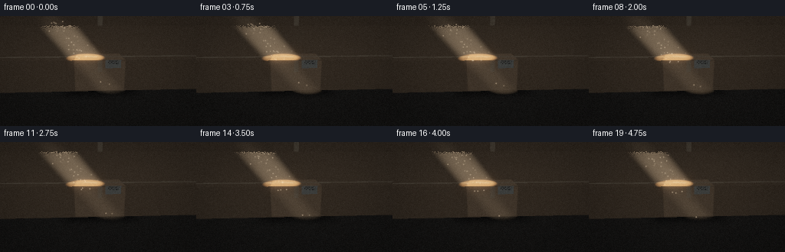
视觉工具实际返回图片 2
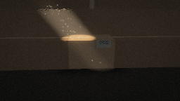
视觉工具实际返回图片 3
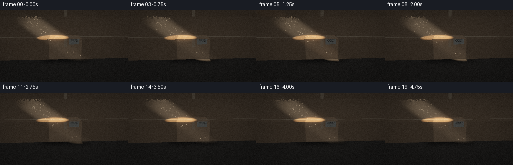
视觉工具实际返回图片 4
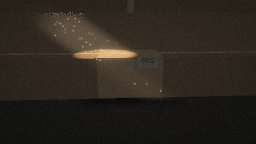
视觉工具实际返回图片 5

视觉工具实际返回图片 6
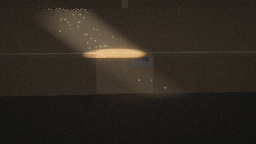
视觉工具实际返回图片 7
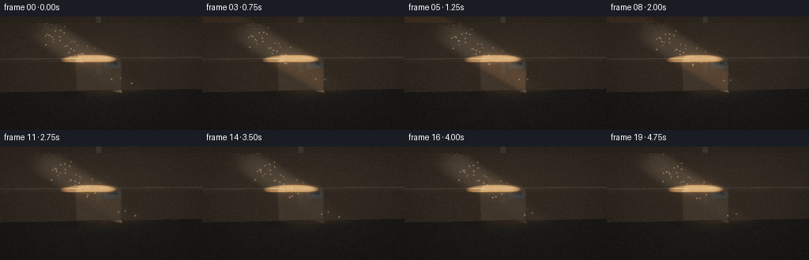
视觉工具实际返回图片 8
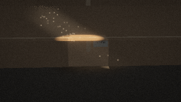
视觉工具实际返回图片 9
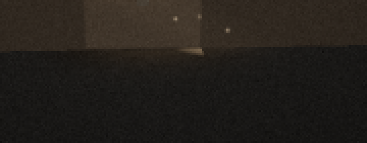
视觉工具实际返回图片 10
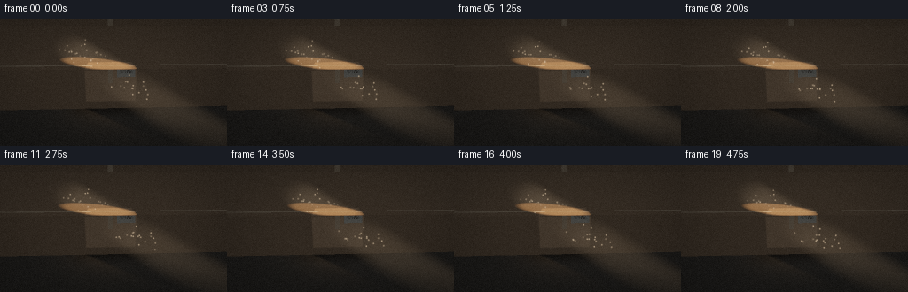
视觉工具实际返回图片 11
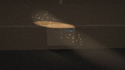
视觉工具实际返回图片 12

视觉工具实际返回图片 13
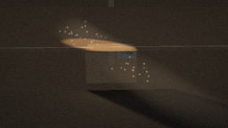
保存候选 7 份；完成命令 38 次；可验证图片返回 13 张。原始 API 响应与完整日志保留在本地。